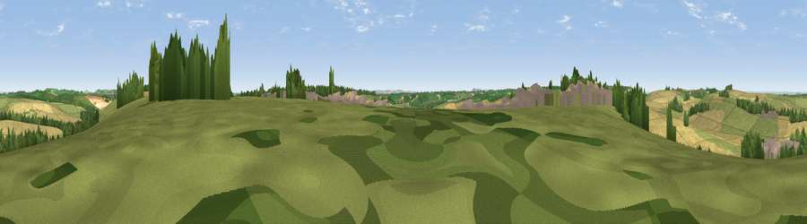

Viewpoint near Baydon
#28973 in England · top 53% of its area beats it · near BaydonThe view, rendered

A 360° render of this exact spot computed from the terrain model, tree cover and land cover — summer colours, afternoon light, calibrated against photographs of famous viewpoints. Real trees, hedges and buildings will differ in detail.
The panorama
Grey silhouette: terrain skyline in each direction (720 bearings, Earth curvature and refraction included). Dashed green: skyline with trees (+15 m) and buildings (+8 m) as obstacles. Blue strip: how far the ground is visible on each bearing.
Where the view opens
Wedge length = distance to the farthest visible ground on that bearing (vegetation-aware). Rings at 10, 25 and 50 km.
What fills the view
53% cropland · 36% grassland · 9% woodland · 2% built-up
Angular shares of the visible panorama (visual magnitude), not map area. Landscape diversity 0.44 (0–1 Shannon).
Key numbers
More beautiful places nearby
The staircase of upgrades: each row has a higher view potential than everything closer. Driving times are estimates from straight-line distance, calibrated against real road routing — check an actual route before setting out.
| Place | Direction | Drive | Score |
|---|---|---|---|
| Peaks Downs | WSW · 1 km | ~2 min | 48.4 |
| Viewpoint near Baydon | ENE · 1 km | ~3 min | 51.9 |
| Viewpoint near Bishopstone | NNW · 2 km | ~6 min | 57.4 |
| Viewpoint near Hinton Parva | WNW · 4 km | ~10 min | 66.2 |
| Charlbury Hill | NW · 5 km | ~10 min | 70.9 |
| Viewpoint near Liddington | W · 6 km | ~12 min | 74.4 |
| Viewpoint near Woolstone | NNE · 8 km | ~16 min | 76.7 |
| Martinsell viewpoint | SSW · 18 km | ~31 min | 77.3 |
51.50996, -1.61126 · source: screening · position refined by local search. Computed location — check access rights before visiting.